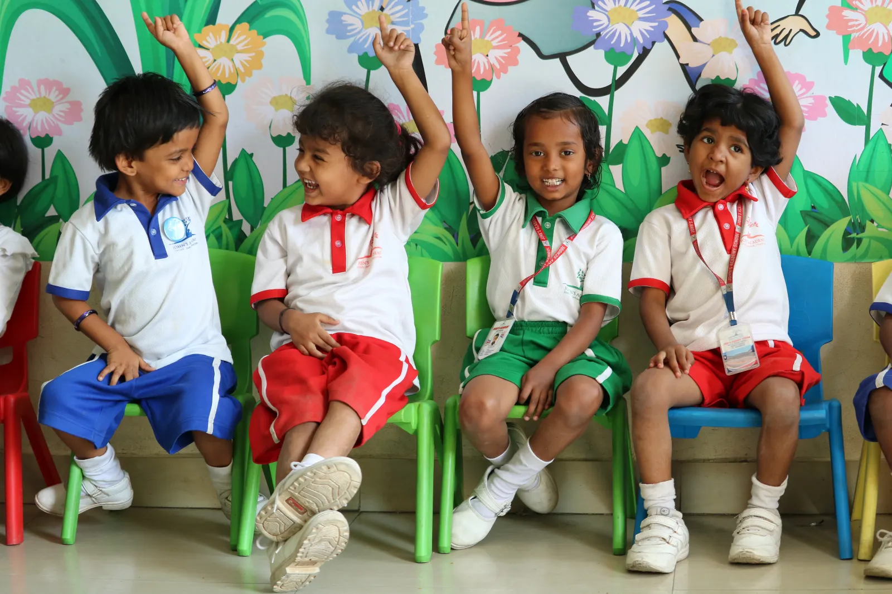
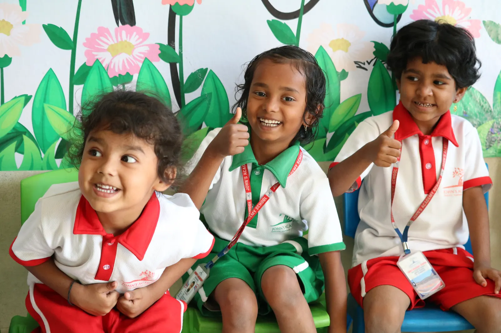
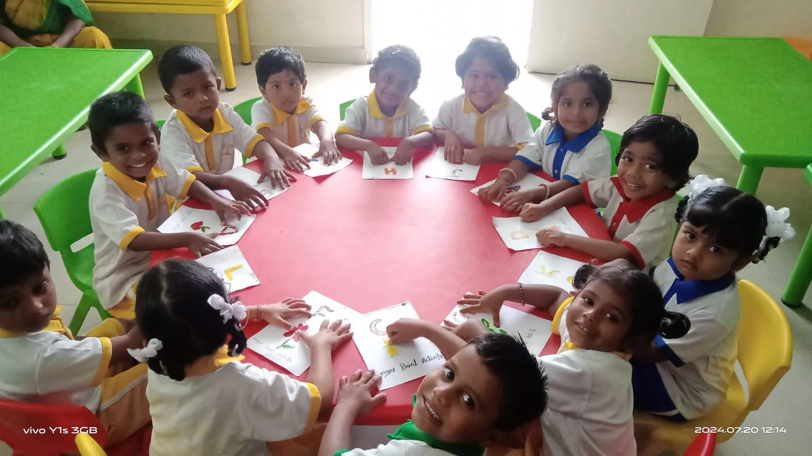
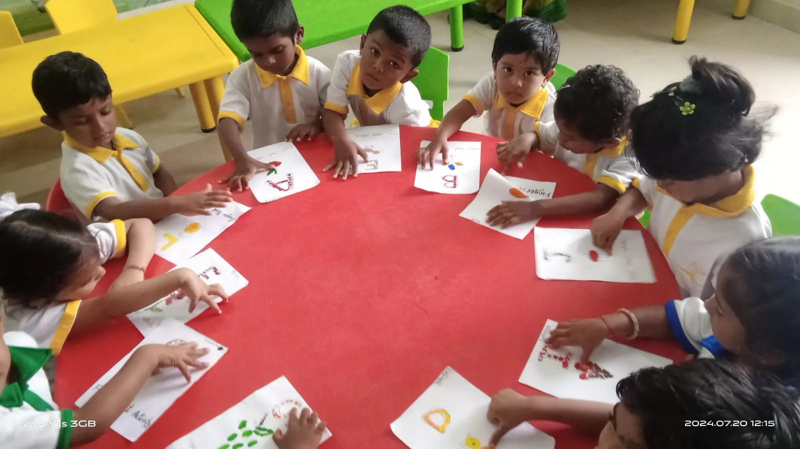
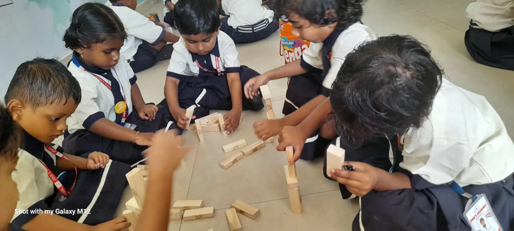
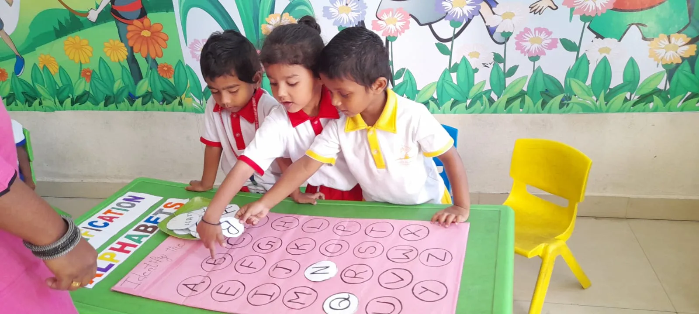
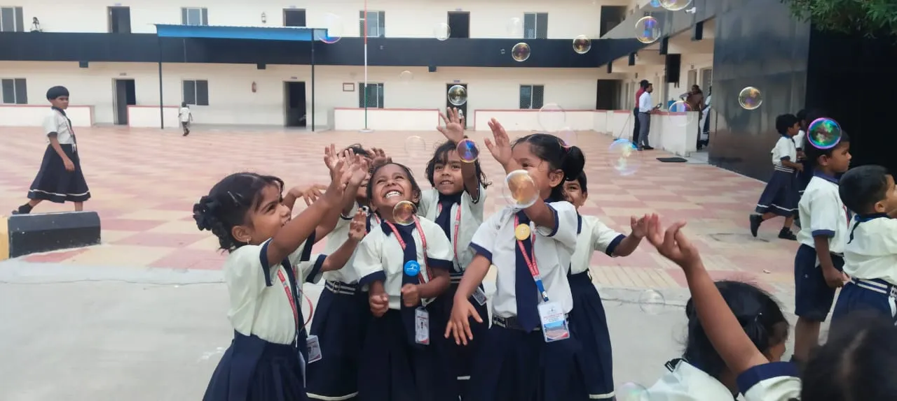
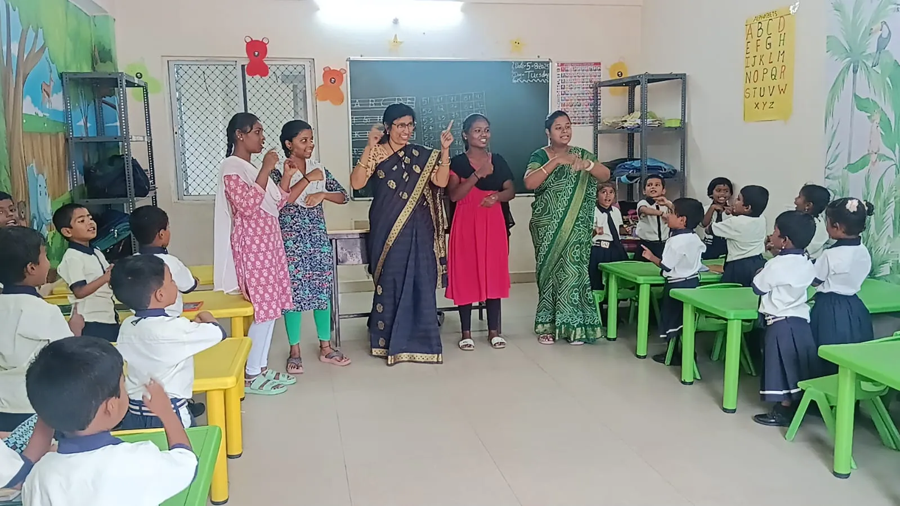
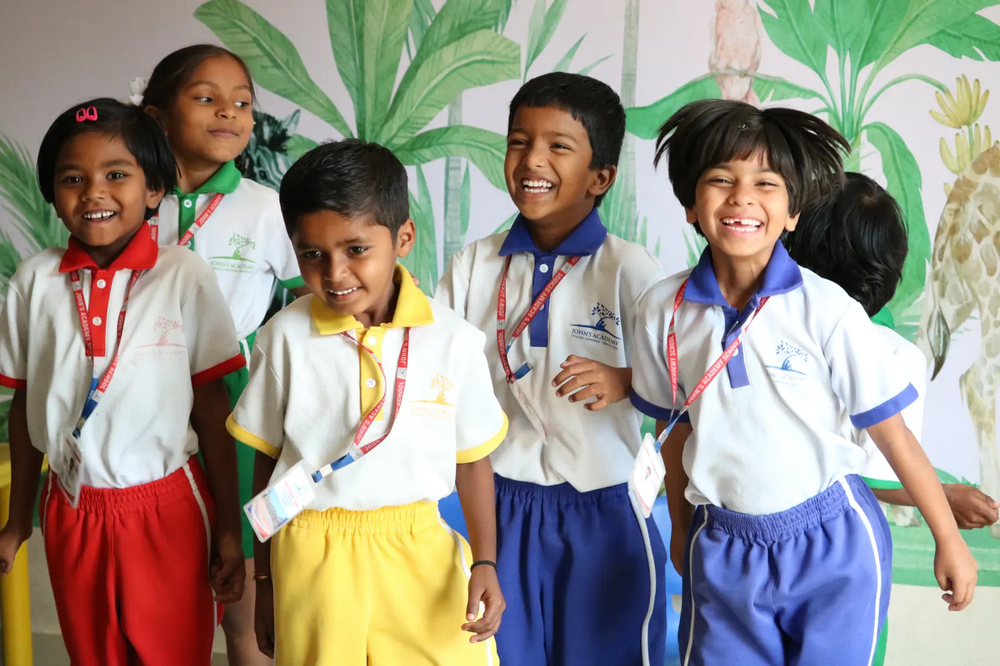

A happy, English medium start to school for children aged 2.5 to 5.5 — built on the NEP 2020-aligned Siadant System, with trained teachers and safe, colourful classrooms. Close to Kompally, Dundigal and Suraram.

John's Academy Medchal runs English medium Nursery, LKG and UKG classes for children aged 2.5 to 5.5 years. Our pre-primary programme is built on the Siadant System, a structured preschool curriculum aligned with the National Education Policy (NEP) 2020 for the Foundation Stage.
Children learn phonics, numbers and the world around them through stories, songs, movement and hands-on activities — a balance of academic structure and joyful learning, in safe, colourful classrooms with caring, trained teachers.
Because John's Academy continues all the way to Grade 10 under the Telangana SSC Board, your child can start in Nursery and stay with the same school, teachers and friends through Grade 1 and beyond — no change of school after UKG.
The Medchal Campus is a short drive from Kompally, Dundigal, Suraram, Bowrampet and Keesara.
Book a Campus Visit →Find your child's class by age. Our admissions team will confirm the exact cut-off date for the year you are applying.
| Class | Child's Age | Focus |
|---|---|---|
| Nursery | 2.5 to 3.5 years | Emotional readiness, fine motor skills and vocabulary |
| LKG | 3.5 to 4.5 years | Blending sounds, sentence formation and pre-reading |
| UKG | 4.5 to 5.5 years | Reading fluency, writing and Grade 1 readiness |
Not sure which class fits? Call +91 90308 69502 and we'll help you decide.
Each year of the Siadant curriculum builds on the last across English, Maths and General Knowledge — so your child arrives in Grade 1 confident and ready.
Emotional readiness, fine motor skills and vocabulary.
Children become confident participants who enjoy school.
Blending sounds, sentence formation and pre-reading.
Children read short words and understand number concepts clearly.
Reading fluency, writing and Grade 1 readiness.
Children enter Grade 1 academically prepared and emotionally secure.
Our early years are built on the Siadant System — a structured, NEP 2020-aligned preschool programme that gives every lesson a clear plan and every child a joyful way in.
Based on Howard Gardner's Multiple Intelligences, lessons reach children through pictures, hands-on tasks, movement, music, language, logic, nature, group work, art and imagination.
Every lesson carries a small, practical value — kindness, sharing, respect, gratitude, responsibility or courage — shaping the heart as well as the mind.
Lessons are visual, hands-on and broken into small steps, so children of every ability — including those who need extra support — can take part comfortably.
Simple stories, everyday examples, songs, games and visual cards connect what children learn to the world they live in.
Our teachers follow step-by-step daily lesson plans and receive Siadant training and Master Trainer mentoring throughout the year.
Clear academic goals for each year, delivered through joyful, hands-on activities — so learning feels like play and progress is real.
Real moments from Nursery, LKG and UKG classrooms at John's Academy Medchal.








Families come to our Medchal Campus from across North Hyderabad. Ask us about transport routes near your home.
Everything parents in and around Medchal usually ask before joining Nursery, LKG or UKG.
Nursery is for children aged 2.5 to 3.5 years, LKG for 3.5 to 4.5 years, and UKG for 4.5 to 5.5 years. Call +91 90308 69502 to confirm the exact cut-off date for the year you are applying.
Yes. John's Academy is an English medium school, and Nursery, LKG and UKG are taught in English. Children build spoken English through rhymes, stories and conversation, and begin reading through phonics.
Our pre-primary classes follow the Siadant System, a structured preschool curriculum aligned with the National Education Policy (NEP) 2020 for the Foundation Stage. It covers English, Maths and General Knowledge across three years, with step-by-step daily lesson plans for teachers.
In Nursery, children learn all 26 letter sounds, numbers 1 to 10, shapes and patterns, and build fine motor skills through colouring, tearing and sticking. In LKG, they blend sounds into CVC words, learn sight words, and work with numbers 0 to 20, simple addition and subtraction, time and money. In UKG, they read digraphs, write creatively, count to 100, skip count and begin early multiplication, so they enter Grade 1 prepared and confident.
The Siadant System is based on Howard Gardner's Multiple Intelligences, so lessons reach children through pictures, hands-on tasks, movement, music, stories, logic, nature and group work. Every lesson also includes a Value Connect — a small practical value such as kindness, sharing or respect. Lessons are broken into small steps so children of every ability can take part.
No. John's Academy continues from Nursery all the way to Grade 10 under the Telangana SSC Board, so your child can stay with the same school, teachers and friends.
Yes. A campus visit is part of every admission. Call +91 90308 69502 or submit an enquiry and we will arrange a time for you to see the classrooms and meet the teachers.
School transport is available on select routes around Medchal, including Kompally, Dundigal and Suraram. Call +91 90308 69502 to check whether there is a route near your home.
Please call our admissions team on +91 90308 69502 or submit an enquiry. We will share the full fee details for your child's class during your campus visit.
Yes. Admissions for the 2027–28 academic year are open for Nursery, LKG and UKG at the Medchal Campus. Pre-primary seats fill first, so we recommend enquiring early.
Families join our Medchal Campus from Medchal, Kompally, Dundigal, Suraram, Bowrampet, Keesara, Petbasheerabad and Alwal.
Pre-primary seats fill up first. Send an enquiry and our admissions team will call you within 24 hours.
Joining John's Academy is easy. We'll guide your family through every step — and you're welcome to bring your child along for the campus visit.
Thank you for your interest in John's Academy.
Our admissions team will call you within 24 hours.